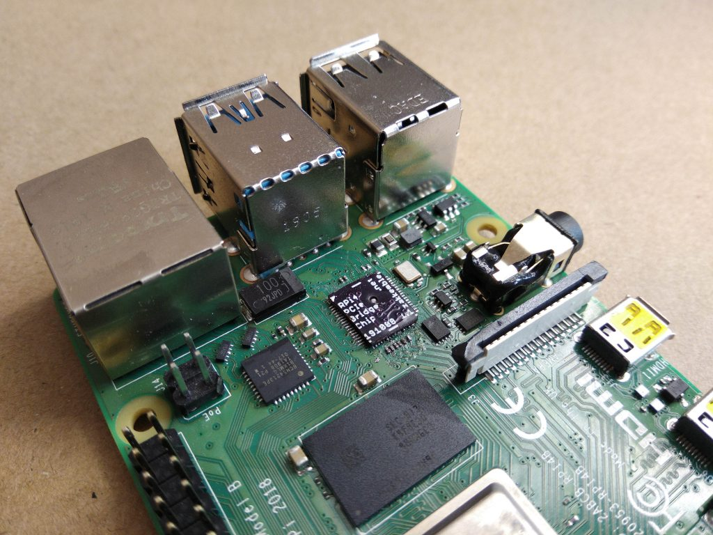

Raspberry Pi 4 PCI-Express Bridge “Chip”から発見。画像もここから転載。
以前紹介したRaspberry Pi 4にPCI Expressのボードを接続する裏技 を簡単に実施する方法が編み出されました。 PCI Expressバスに直結されているUSBハブのコントローラチップをはがして、PCI Expressの信号をそのままUSBポートに引き出すという改造ですが、以前はこれを細いワイヤーのはんだ付けで実施していましたが、今回紹介するのは、それ専用の「基板」を利用する方法です。

ICと同じ大きさのこの基板は、前述の信号のバイパスを行う配線となっています。
これを使うことで、USBハブのICをはがして、この基板を実装しなおすだけで、PCI Expressが利用できるというものです。

← 前の記事 - Arduinoで作る巨大なテトリス

次の記事 - 小さな蓋つきの試験管を使った表面実装部品の整理方法 →
関連記事

ライフゲームを基にしたシンセサイザー

カラー液晶付きテスターを改造してテトリスを実行する

iPadとブレッドボードを組み合わせた電子工作開発ボード
パンチテープを読み込めるBADGE

キーボード一体型のRaspberryPi端末